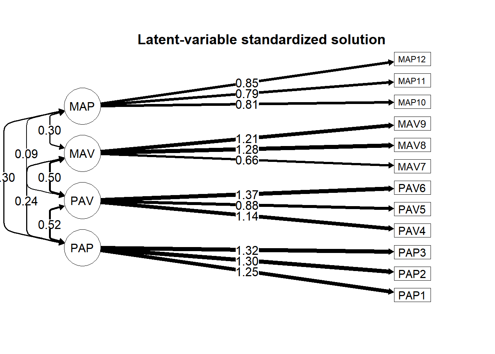

22 Using alternative model specifications
22.1 Rescaling the factors to be standardized
If we wish to set our factor scales to have a variance of 1 instead of forcing them to be on the scale of the first variable, we can use the NA* as a prefix to the first observed variable in a factor to tell lavaan to estimate that parameter. We then should set the variance of the factor to 1 using the ~~ operator with *1. Let’s do this with the PAV factor using NA*PAV4 along with PAV ~~ 1*PAV:
library(lavaan)
mymod2 <- "PAP =~ PAP1 + PAP2 + PAP3
PAV =~ NA*PAV4 + PAV5 + PAV6
MAV =~ MAV7 + MAV8 + MAV9
MAP =~ MAP10 + MAP11 + MAP12
PAV ~~ 1*PAV "
cfa_fit2 <- cfa(mymod2,
data = dat,
estimator = "MLR",
mimic = "Mplus")We can use the summary() function on our model output, as we did with the earlier model. We can also look at the specific parameters.68
mod2_ests <- parameterEstimates(cfa_fit2)
library(dplyr)
mod2_ests %>% filter(op == "=~", lhs == "PAV")
mod2_ests %>% filter(op == "~~", lhs == "PAV") ## lhs op rhs est se z pvalue ci.lower ci.upper
## 1 PAV =~ PAV4 1.144 0.065 17.664 0 1.017 1.271
## 2 PAV =~ PAV5 0.884 0.070 12.623 0 0.746 1.021
## 3 PAV =~ PAV6 1.368 0.057 23.910 0 1.256 1.480
## lhs op rhs est se z pvalue ci.lower ci.upper
## 1 PAV ~~ PAV 1.00 0.000 NA NA 1.000 1.000
## 2 PAV ~~ MAV 0.33 0.044 7.529 0.000 0.244 0.416
## 3 PAV ~~ MAP 0.07 0.033 2.113 0.035 0.005 0.135We now see the pattern coefficient of PAV4 is being estimated but that the variance of the PAV factor has been set to 1 and is no longer being estimated.
If we wish set all of the factors’ variances to 1 while estimating their respective first loadings, we can use the std.lv = TRUE argument with our original model specification:
cfa_fit_stdlv <- cfa(mymod,
data = dat,
estimator = "MLR",
mimic = "Mplus",
std.lv = TRUE )
summary(cfa_fit_stdlv)We can plot that model’s path diagram.
semPlot::semPaths(cfa_fit_stdlv, what = "est", intercept = F,
rotation = 2, fade = F, edge.color = "black",
curvePivot = T, sizeMan = 8, residuals = F, curvature = 3,
title = F, sizeMan2 = 3, sizeLat2 = 8,
label.cex = 1, edge.label.cex = 1.2)
title("Latent-variable standardized solution", line = 1)
22.2 Specifying a competing, nested, model
Another reason to change model specifications is to look at a competing theory that is applicable to our data. If our competing theory hypothesized that the covariance between two factors is negligible or zero, we can fix the parameter. For instance, let’s pretend a competing theory was that PAP and MAP are unrelated. The ~~ is for covariance, so we set the covariance between them to be zero using PAP ~~ 0*MAP.
library(lavaan)
mod_compete <- "PAP =~ PAP1 + PAP2 + PAP3
PAV =~ PAV4 + PAV5 + PAV6
MAV =~ MAV7 + MAV8 + MAV9
MAP =~ MAP10 + MAP11 + MAP12
PAP ~~ 0*MAP "
cfa_fit_compete <- cfa(mod_compete,
data = dat,
estimator = "MLR",
mimic = "Mplus")
summary(cfa_fit_compete)We can look at the fit statistics. Again, because we used estimator = MLR instead of the default maximum likelihood estimation, we are asking for scaled and robust versions of these fit indices. If we used the default, we’d remove the .scaled and .robust from our code here.
fit_stats4 <- fitMeasures(cfa_fit_compete, c("chisq.scaled","df.scaled", "pvalue.scaled",
"cfi.robust",
"tli.robust",
"rmsea.robust",
"srmr"))
fit_stats4## chisq.scaled df.scaled pvalue.scaled cfi.robust tli.robust rmsea.robust srmr
## 319.027 49.000 0.000 0.932 0.908 0.077 0.080This model does not fit as well as that from the original theory that informed the first model specification.
22.3 Conducting model comparisons
If we have competing theories with accompanying models, one of which is nested within the other, we can compare their fit. A general function that we can use is anova(), with the two models under comparison in the function.
##
## Scaled Chi-Squared Difference Test (method = "satorra.bentler.2001")
##
## lavaan->lavTestLRT():
## lavaan NOTE: The "Chisq" column contains standard test statistics, not the robust test that
## should be reported per model. A robust difference test is a function of two standard (not
## robust) statistics.
## Df AIC BIC Chisq Chisq diff Df diff Pr(>Chisq)
## cfa_fit 48 40098 40305 283.98
## cfa_fit_compete 49 40162 40364 350.04 48.756 1 2.899e-12 ***
## ---
## Signif. codes: 0 '***' 0.001 '**' 0.01 '*' 0.05 '.' 0.1 ' ' 1We see a statistically significant difference between the two models. This suggests that the more constrained model, which is the one in which we fixed the covariance between two factors to be zero, is worse than the one without that constraint. We can also look at the Akaike information criterion (AIC) for each model and identify which has worse fit by looking for the larger AIC value, which in this case was cfa_fit_compete. We can probably conclude that our data provide more support for the first theory, as the hypothesized structure has better fit to the data.
When we present model comparisons, we should also present the two models’ fit statistics because if both models fit poorly, the comparison is not so meaningful. We could use the fitMeasures() function on each of the two models’ outputs. Another convenient function is from the semTools package, called compareFit(). It includes the results of the anova() function along with each model’s fit indices.
We’re using the dplyr package’s
filter()function so we can filter specific rows. Instead of thefilter()function, we could use Base R with indexing, such asmod2_ests[mod2_ests$op == "=~", ].↩︎